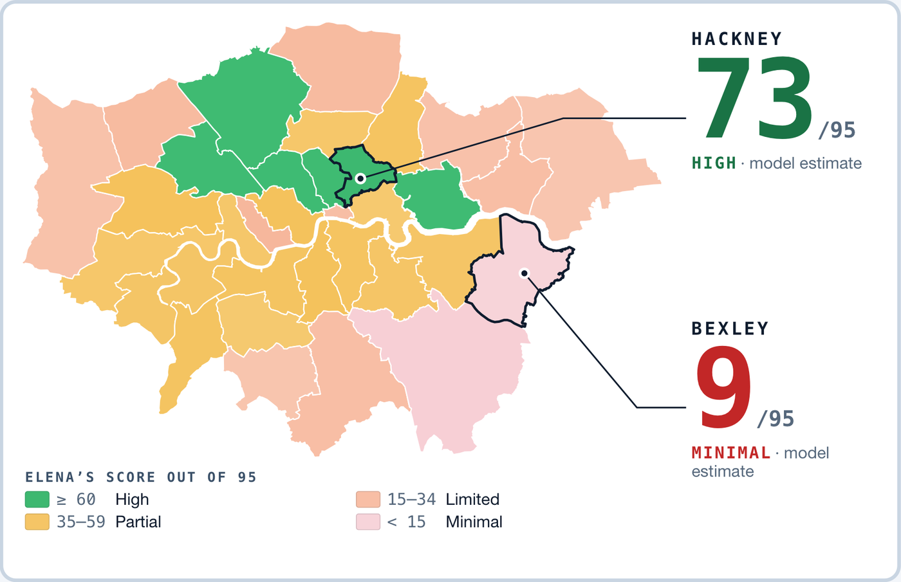

CARE MAP LONDONHealth Mission exhibition · Museum of London Docklands · 7 October 2026
Care Map London
Who digital-first leaves out
A public-data model of who a digital-first NHS shuts out, and which change helps whom.

Elena’s safety score out of 95 in each of London’s 32 boroughs and the City — a model estimate on public data. Same person, different borough. Elena is one of six composite personas.
About
Care Map London is a decision-support instrument for boroughs, the London Health Board and NHS services. The London Health Mission cites a roughly 20-year gap in healthy life expectancy across London. Digital-first NHS services can deepen it, shutting out people with no internet, ID, English or fixed address. Across 32 boroughs and the City, six composite personas try an eight-step GP portal: 129 of 198 plays stop before the end (model estimate). A two-minute kiosk and a dashboard with a two-point policy budget show who each change moves. Practitioners see who will not arrive, NHS London tests services before launch, and patients’ access to care depends less on postcode.
Why it matters
129 of 198
person × area plays of the GP portal (6 people × 33 areas) stop before the end
model estimate on public data
45 → 80
Elena’s access failure: 45 with a human Community Health Navigator, 80 with NHS 111 AI triage. Same person, different design.
0–100, 2025 London average, model estimate
29 of 33
James, 80 and offline, is blocked at step 2 (Web Access) of the GP portal in 29 of 33 areas.
model estimate
How it works
1Try it at the kiosk — two minutesPick what makes care hard for you, pick where you live, then try a 2033 scenario — a fully digital GP portal — and see where it could stop you. Five languages, no app, no account.
2Bring your result to the tableThe dashboard shows a map, a safety score per persona and area, the eight journey steps, and a policy budget: 2 points across 5 levers. Who do you fund — and who do you leave out?
3Decide before launchBoroughs, the London Health Board and NHS services can see where each group stops and which change moves whom — before a digital service goes live.
Read the numbers as model estimates, not records. The six people are composite personas built from published research, not individuals. It is decision support for public services — not an app the excluded are expected to use.
Data: City of Sanctuary · Charity Commission · ONS Census 2021 · IoD 2025 · GMCA DERI · GP Patient Survey 2026 · NHS England · OHID · DHSC ASCOF · CQC · CHAIN. All figures are model estimates on public data.